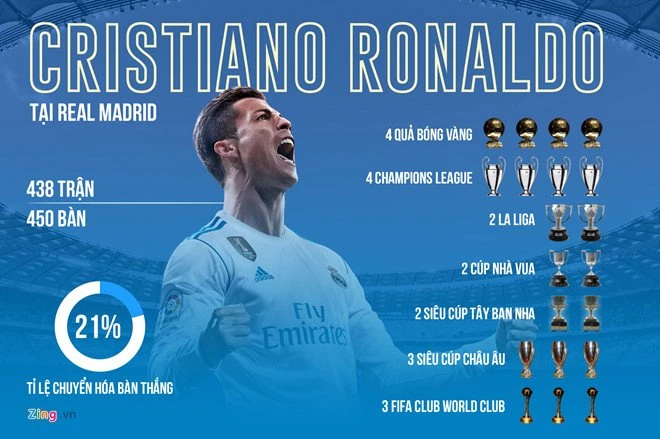

Nhiều cầu thủ của Real Madrid từng giành những giải thưởng cá nhân lớn như Quả bóng Vàng, Cầu thủ xuất sắc nhất UEFA và Pichichi.
- Nhiều cầu thủ Real Madrid từng giành các danh hiệu cá nhân cao quý như giải thưởng Cầu thủ xuất sắc châu Âu, Chiếc giày vàng, Pichichi (vua phá lưới La Liga), v.v.
- Ví dụ: Karim Benzema từng được vinh danh Cầu thủ xuất sắc UEFA; Luka Modrić từng đạt các danh hiệu lớn khi khoác áo Real.
- Không chỉ thế, Cristiano Ronaldo cũng là cái tên xuất sắc nhất thế giới khi còn ở trong màu áo của Real Madrid
